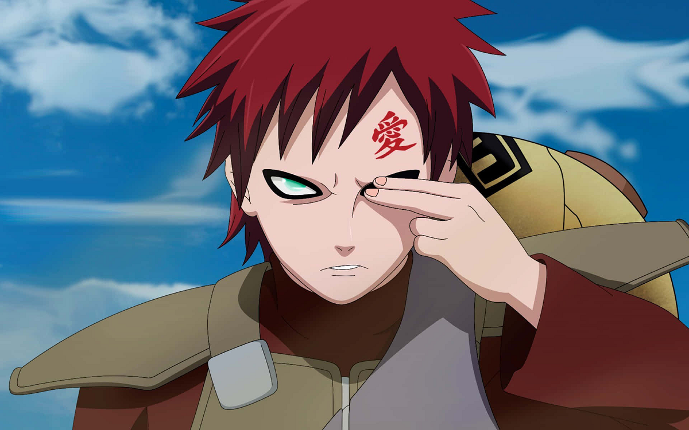

Bem-vindos
 Quero conhecer!Gaara: Da arma temida ao líder respeitado
A ascensão de Gaara ao posto de Kazekage é uma das transformações mais impactantes do universo ninja. Nascido como jinchūriki do Shukaku, Gaara foi rejeitado por sua vila, temido por sua própria família e moldado por uma infância marcada pela solidão e violência. Durante muito tempo, ele acreditou que só o ódio o tornava forte — que viver era apenas destruir para sobreviver. Mas tudo mudou após seu confronto com Naruto Uzumaki. Ao ver alguém que também carregava um demônio dentro de si, mas que escolheu proteger os outros em vez de se isolar, Gaara começou a questionar seu próprio caminho. Naruto não apenas derrotou Gaara fisicamente — ele o venceu emocionalmente, plantando a semente da empatia e da redenção. Com o tempo, Gaara passou a buscar respeito não pelo medo, mas pela confiança. Ele se dedicou a proteger sua vila, a entender os sentimentos dos outros e a construir pontes onde antes só havia muros. Sua nomeação como Kazekage não foi apenas um título político — foi a prova de que até os mais quebrados podem se reconstruir. Como líder, Gaara se tornou símbolo de força, sabedoria e compaixão. Ele uniu Sunagakure, enfrentou ameaças globais e até arriscou sua vida para salvar seu povo. Mais do que isso, ele mostrou que o verdadeiro poder vem da capacidade de mudar, de se conectar e de lutar por algo maior que si mesmo.
Quem foi o Gaara?
Gaara é um personagem anime naruto,conhecido como jinchuriki do shukaku. Na infancia viveu isolado e temido por todos o que tornou frio e solitario, com o tempo ao conhecer naruto, ele encontra um novo proposito e transforma sua dor em força para proteger sua vila, tornado-se o quinto kazekage da areia.